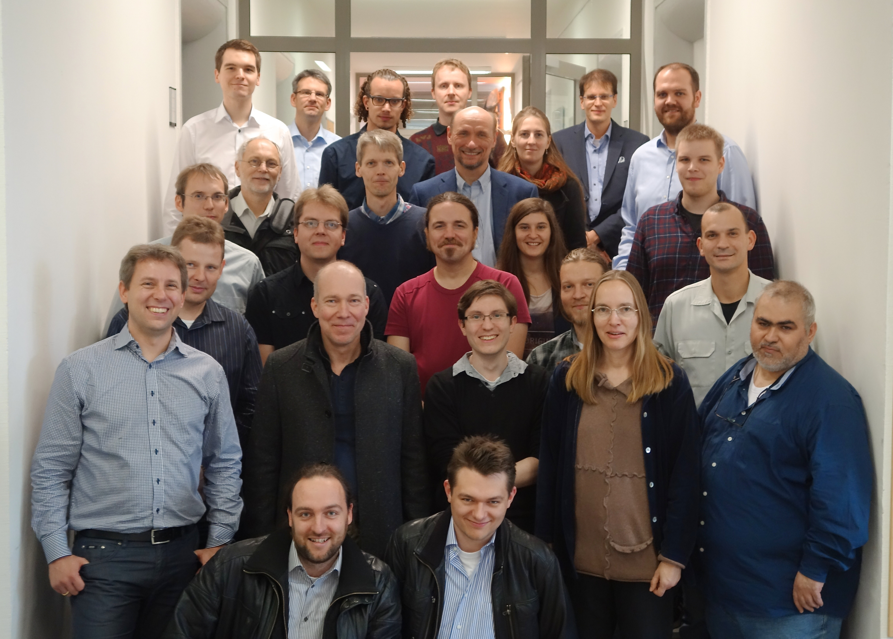

2. Workshop "Automatische Bewertung von Programmieraufgaben" (ABP'2015)
6.11.2015, Wolfenbüttel, Ostfalia Hochschule
Keynote-Vortrag: Prof. Niels Pinkwart (Humboldt Universität)

Zielsetzung und Themen
Das Ziel des Workshops ist es, einen Dialog über die technische Entwicklung von Systemen zur
automatischen Bewertung von Programmieraufgaben zu führen. Auch von Interesse sind didaktische
Perspektiven, zum Beispiel Einsatzszenarien, der didaktische Mehrwert und die Entwicklung
didaktischer Konzepte zum Einsatz von automatischen Bewertungssystemen für Programmieraufgaben. Es
handelt sich bereits um den zweiten ABP Workshop. Der Tagungsband des 1. ABP Workshops kann
hier eingesehen werden.
Der Workshop richtet sich an TeilnehmerInnen aus Wissenschaft und Praxis, die Systeme zur
automatischen Bewertung von Programmieraufgaben entwickeln, einsetzen oder an deren Einsatz
interessiert sind. Im Sinne des thematischen Schwerpunkts des Workshops sind insbesondere
diejenigen TeilnehmerInnen eingeladen, die Erfahrung mit dem Austausch und der Wiederverwendung von
Programmieraufgaben aus technischer, organisatorischer oder inhaltlicher Sicht haben.
Mögliche Themen für Workshopbeiträge sind daher (als nicht ausschließende Aufzählung):
- Automatische Verfahren für die Bewertung von Programmieraufgaben und die Erzeugung von
Feedback
- Formate und Standards für die Beschreibung von Programmieraufgaben
- Integration von automatisch bewerteten Programmieraufgaben in bestehende E-Learning-Szenarien
und -Systeme
- Organisatorische Aspekte des Erstellens, Verwaltens und Austauschs von Programmieraufgaben
- Didaktische Szenarien für den Einsatz automatischer Bewertungssysteme für
Programmieraufgaben
- Empirische Untersuchungen der Effekte des Einsatzes automatischer Bewertungssysteme für
Programmieraufgaben
Termine und Einreichungen
- 20.7: Frist für die Einreichung eines Beitrags (max. 8 Seiten)
- 14.8.: Benachrichtigung über die Annahme des Beitrags
- 30.9.: Frist für die Einreichung der Endfassung des Beitrags (max. 8 Seiten)
- 6.11: Workshop in Wolfenbüttel
Beiträge können auf Deutsch oder Englisch verfasst werden. Alle Beiträge sind über das
Konferenzsystem EasyChair im PDF-Format einzureichen. Die Beiträge sollen die LNI
Formatierungsrichtlinien befolgen. Die Proceedings werden on-line über CEUR veröffentlicht.
Organisation
- Uta Priss (Ostfalia Hochschule für angewandte Wissenschaften)
- Michael Striewe (Universität Duisburg-Essen)
Programmkomitee
- Mario Amelung (Eudemonia Solutions AG)
- Oliver Bott (FH Hannover)
- Torsten Brinda (Universität Duisburg-Essen)
- Helmar Gust (Universität Osnabrück)
- Andreas Hoffmann (Universität Siegen)
- Nils Jensen (Ostfalia Hochschule für angewandte Wissenschaften)
- Andreas Schwill (Universität Potsdam)
- Sven Strickroth (Humboldt-Universität Berlin)
{kind=link}